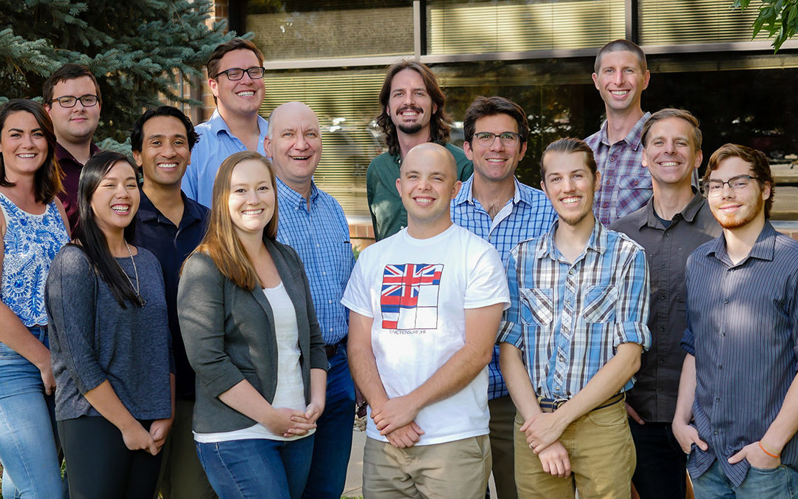

I'm 21 years old, living in Boulder, CO. I enjoy programming, writing blogs, and watching movies. I live in the code, spending as much time as possible trying to work things out. I leave my computer on so it's always available for me to log into from my phone if I come up with any ideas while on the go.
I am a graduate of CodeCraft School of Technology, a web development boot camp. Pictured above is my class I am at the far right. There, I graduated with a certificate in Full Stack web development, MEAN stack. I completed my final project in Angular2.
I spend my free time watching movies to blog about, messing with various Linux systems, and writing programs to make my life easier. I like all types of movies and music, and am always looking for new things to watch and listen to.
I am a graduate of CodeCraft School of Technology, a web development boot camp. Pictured above is my class I am at the far right. There, I graduated with a certificate in Full Stack web development, MEAN stack. I completed my final project in Angular2.
I spend my free time watching movies to blog about, messing with various Linux systems, and writing programs to make my life easier. I like all types of movies and music, and am always looking for new things to watch and listen to.
For my final project at CodeCraft, I built a music discovery site using Angular2 RC5. It's explained in detail in this video.